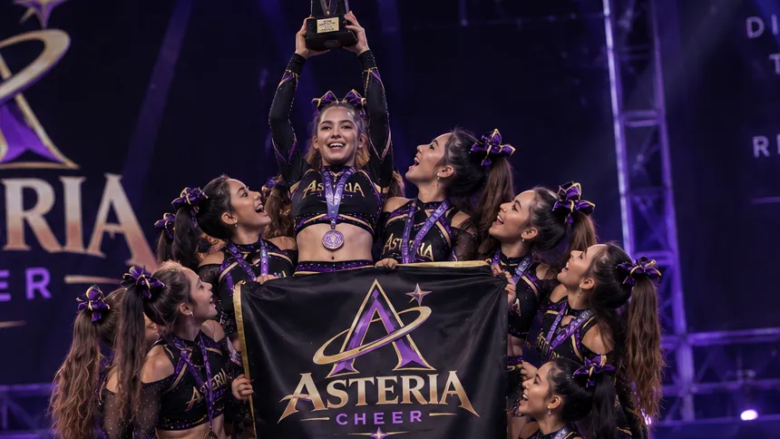
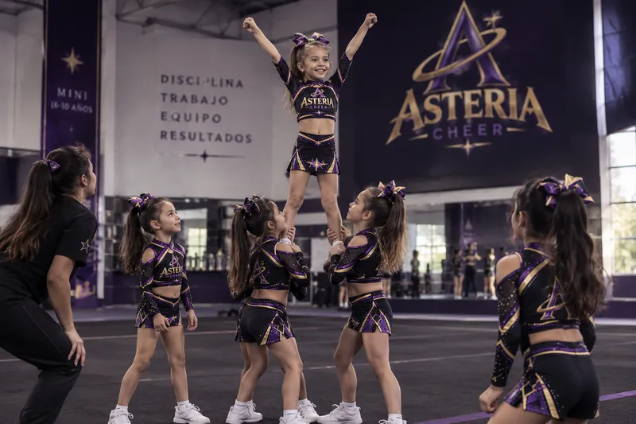
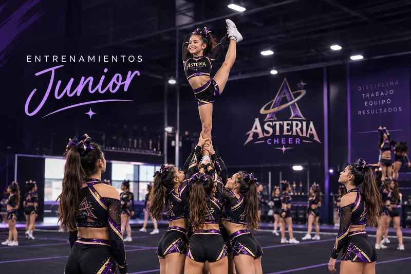
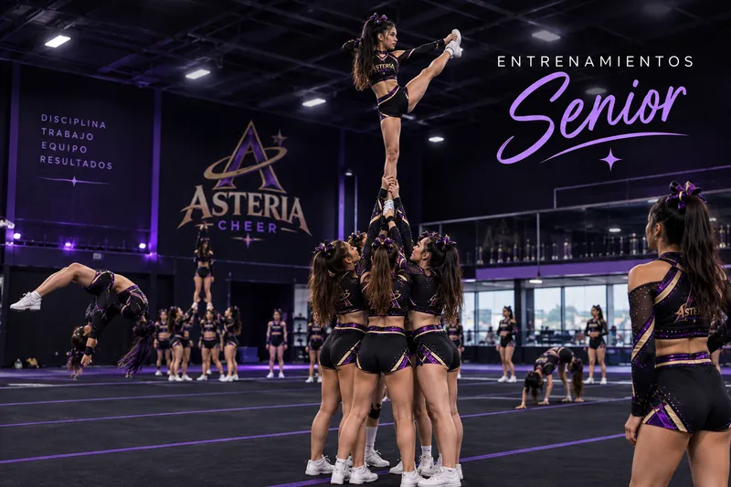
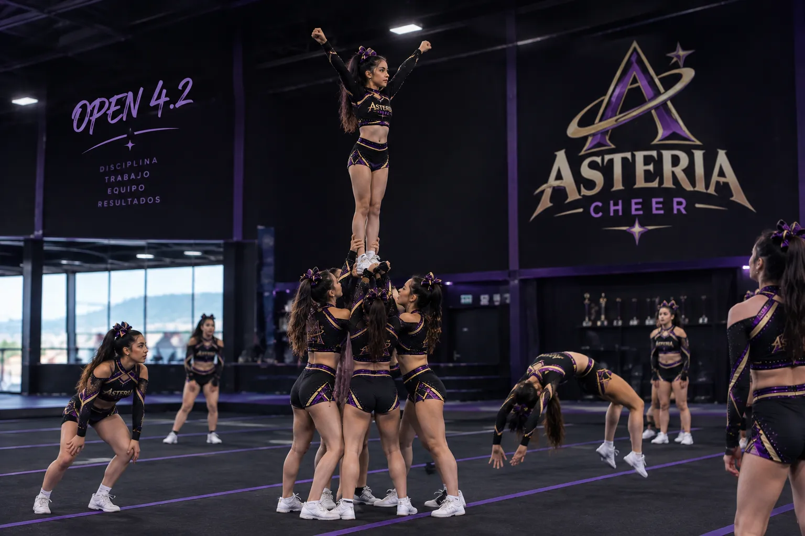
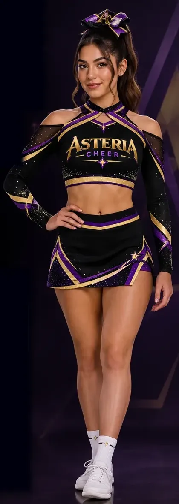
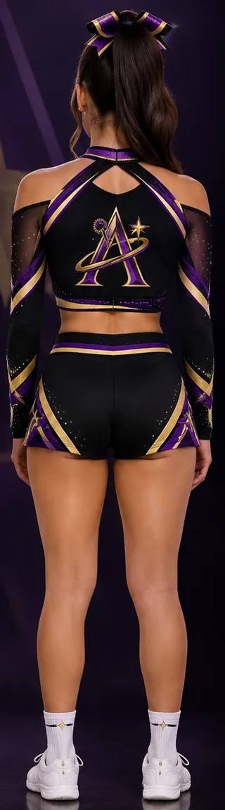
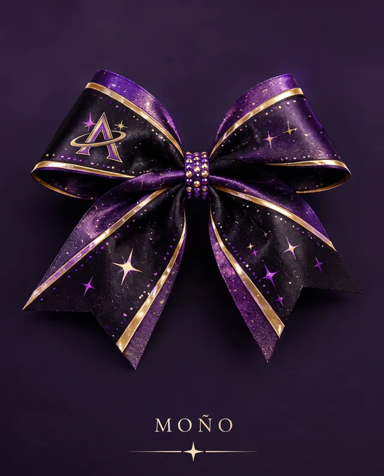
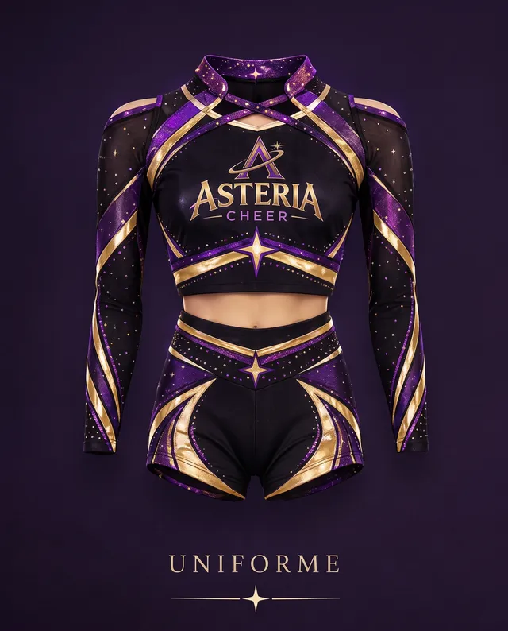

En movimiento
Momentos Asteria
Galería
Entrenamientos, pirámides y competencias: así brillan nuestras estrellas.
Destacados
Lo mejor de la temporada
Fotos
Nuestros momentos
Toca cualquier foto para verla en grande.





Uniforme 2026
Negro, morado y dorado: los colores de nuestra marca en cada detalle, de la cabeza a los tenis.




Diseño conceptual del uniforme generado con inteligencia artificial.